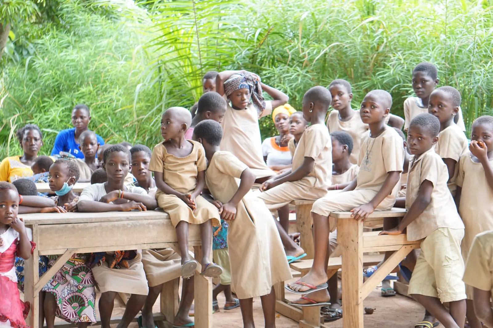

À Fribourg · écoles et rencontres
Le chemin de l'école, ici et là-bas.
Un atelier de 90 minutes pour les classes de 5H à 8H. Chaque élève part de son propre trajet jusqu'à l'école, le compare avec celui d'un enfant de la région de Kpalimé, et découvre ce qu'un forage change dans une journée.

Mon chemin de l'école
Je pars de
Je mets minutes
En chemin, je croise
Pour la classe
Ce que vos élèves y gagnent.
L'atelier part de ce que les élèves connaissent par cœur, leur propre chemin, pour ouvrir sur le monde sans clichés.
- Géographie
Lire le monde
Cartes, distances et temps de trajet, à partir de leur propre chemin de l'école.
- Mathématiques
Compter juste
Litres, trajets, minutes : des calculs concrets qui donnent du sens aux chiffres.
- Français
Écrire pour quelqu'un
Une lettre à une classe partenaire de la région de Kpalimé.
- Vivre ensemble
Regarder sans clichés
Voir ce qui est différent, et tout ce qui est pareil : apprendre, jouer, grandir.
En lien avec la formation générale du Plan d'études romand (interdépendances, vivre ensemble) et l'éducation en vue d'un développement durable.
Le déroulé
90 minutes, quatre étapes.
Plus dix minutes pour ouvrir et conclure ensemble.
- Étape 1
Mon chemin
20 minChaque élève dessine son trajet jusqu'à l'école : la durée, les obstacles, ce qu'il croise en route.
- Étape 2
Leur chemin
20 minPhotos et récits du terrain : le chemin d'élèves de la région de Kpalimé, et ce qui le rallonge.
- Étape 3
Le bidon
20 minPorter quelques litres d'eau sur vingt mètres, puis calculer : combien de trajets faut-il pour une famille, chaque jour ?
- Étape 4
La lettre
20 minLa classe écrit à une classe partenaire au Togo, et garde une trace de l'atelier.
En pratique
Nous cherchons des classes pilotes pour 2027.
Vous enseignez dans le canton de Fribourg ? Proposez votre classe : nous construirons la première version de l'atelier avec vous.
- Pour qui
- Classes de 5H à 8H du canton de Fribourg
- Durée
- 90 minutes, dans votre classe
- Matériel
- Fourni par l'association
- Langue
- Français
- Conditions
- Année pilote 2027, à convenir ensemble
Rencontres
Une soirée de lancement à Fribourg.
Dès la création officielle, nous présenterons l'association et le projet eau lors d'une soirée publique. La date sera annoncée ici.
Prochaine étape
Voir où nous en sommes.
Tout ce qui est fait, en cours et à venir.